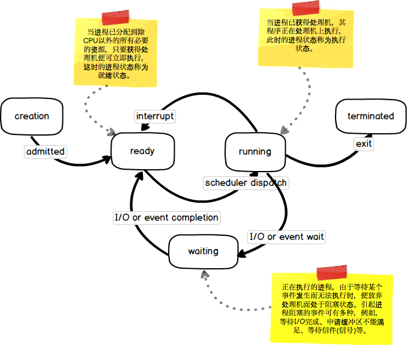
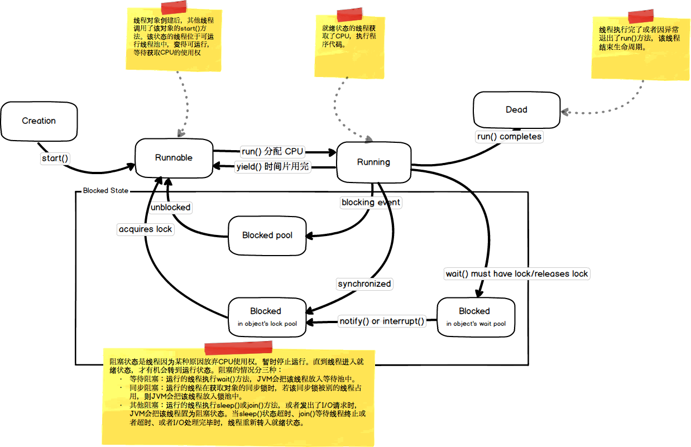

作为非科班生，在搞清楚什么是并发？什么是并行？之前，还是需要先了解一下CPU、Process和Thread之间的关系。
概念
什么是处理器?
中央处理器 （英语：Central Processing Unit，缩写：CPU），是计算机的主要设备之一，功能主要是解释计算机指令以及处理计算机软件中的数据。计算机的可编程性主要是指对中央处理器的编程。中央处理器、内部存储器和输入/输出设备是现代电脑的三大核心部件。– 维基百科
CPU是计算机的核心，控制指令的发布，负责所有的数据计算处理。
什么是进程？
进程（英语：process），是计算机中已运行程序的实体。进程为曾经是分时系统的基本运作单位。在
面向进程设计的系统（如早期的UNIX，Linux 2.4及更早的版本）中，进程是程序的基本执行实体；在面向线程设计的系统（如当代多数操作系统、Linux 2.6及更新的版本）中，进程本身不是基本运行单位，而是线程的容器。程序本身只是指令、数据及其组织形式的描述，进程才是程序（那些指令和数据）的真正运行实例。– 维基百科
进程是操作系统进行资源分配和调度的一个独立单位，是应用程序运行的载体。进程是一种抽象的概念，并没有统一的标准定义。进程一般由程序、数据集合和进程控制块三部分组成。程序用于描述进程要完成的功能，是控制进程执行的指令集；数据集合是程序在执行时所需要的数据和工作区；程序控制块(Program Control Block，简称PCB)，包含进程的描述信息和控制信息，是进程存在的唯一标志。
进程生命周期

什么是线程？
线程（英语：thread）是操作系统能够进行运算调度的最小单位。它被包含在进程之中，是进程中的实际运作单位。一条线程指的是进程中一个单一顺序的控制流，一个进程中可以并发多个线程，每条线程并行执行不同的任务。– 维基百科
线程是最小的执行单元,是一个抽象的概念，它的抽象层次比进程抽象层次低。
线程的生命周期

提示： 新启动的子线程并不会随着主线程的结束而结束。一旦子线程启动起来后，它就拥有和主线程相同的地位，它不会受主线程的影响。

关系
处理器、进程和线程的关系
- 操作系统为进程分配资源，不对线程分配资源。一个进程内可以包含多个线程，同一进程所产生的线程共享同一内存空间。线程是进程的一个实体，是
CPU调度和分派的基本单位，也就是说处理调度的是线程。线程本身基本上不拥有系统资源,只拥有一点在运行中必不可少的资源(如程序计数器,一组寄存器和栈),但是它可与同属一个进程的其他的线程共享进程所拥有的全部资源. - 进程有独立的地址空间，一个进程崩溃后，在保护模式下不会对其它进程产生影响，而线程只是一个进程中的不同执行路径。线程有自己的堆栈和局部变量，但线程之间没有单独的地址空间，一个线程死掉就等于整个进程死掉，所以多进程的程序要比多线程的程序健壮，但在进程切换时，耗费资源较大，效率要差一些。